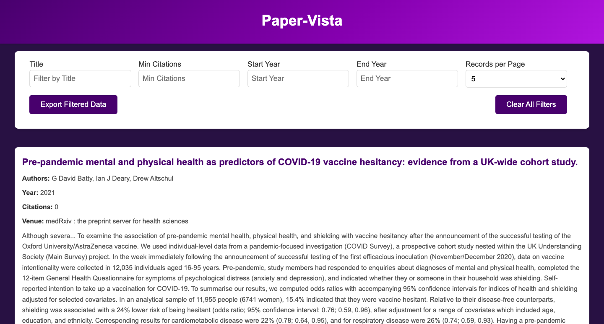

Challenges Faced
- Managing the filtering logic to handle edge cases, such as empty filters or mismatched data types.
- Optimizing the pagination logic to dynamically adjust the page count based on filters.
- Handling errors gracefully when the JSON file failed to load or had invalid data.
- Implementing "Read More" functionality dynamically for long text while maintaining a consistent user interface.
Improvements
- Adding user-friendly error messages and tooltips to guide users in applying filters effectively.
- Implementing a debounce mechanism for the filter inputs to optimize performance and prevent redundant filter operations.
- Using a loading indicator while fetching and processing data to enhance user experience.
- Allowing users to save and load their filter configurations for easier access in subsequent sessions.
- Integrating accessibility features to ensure compatibility with screen readers and other assistive technologies.
- Enhancing the "Read More" functionality to improve usability on mobile devices.
Steps for Converting CSV to JSON
To ensure that the data was in the appropriate format for the JavaScript code, a CSV file was converted to JSON. Here is an outline of the process:
- Loaded the CSV file into a program capable of handling data transformations.
- Mapped the CSV headers to the JSON keys, ensuring consistency with the JavaScript code's expectations.
- Exported the data in JSON format, structured as an array of objects, with each object representing a paper.
- Validated the JSON file against a sample to ensure compatibility with the JavaScript filtering logic.
Chat Gpt Link
Link for ChatGPT
